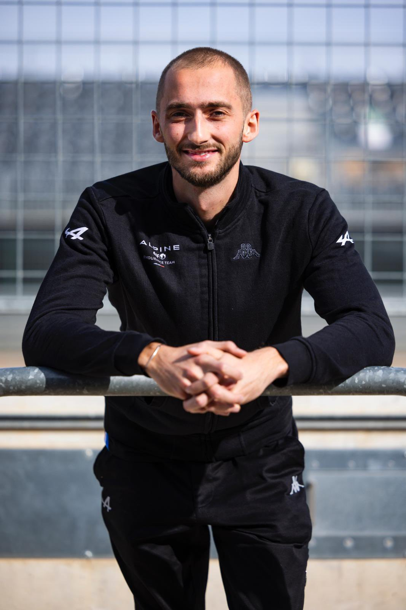

Ferdinánd Zvonimir herceg
Ausztria és Magyarország
| Született: | 1997. június 21. |
| Szülők: | Károly és Franciska |
| Uralkodóház: | Habsburg-Lotharingiai |
Rövid életrajz
Valami szöveg ide jön majd a hercegről.
← Vissza a térképhez| Született: | 1997. június 21. |
| Szülők: | Károly és Franciska |
| Uralkodóház: | Habsburg-Lotharingiai |
Valami szöveg ide jön majd a hercegről.
← Vissza a térképhez